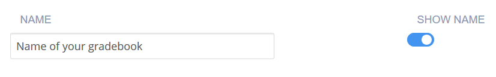
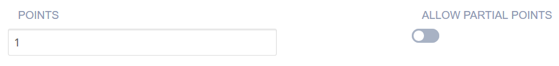
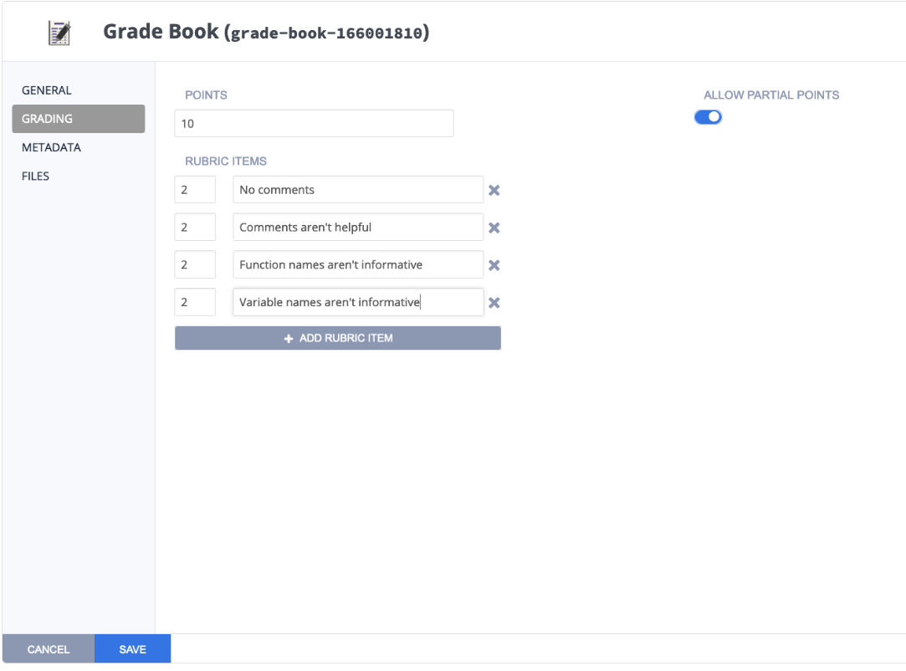
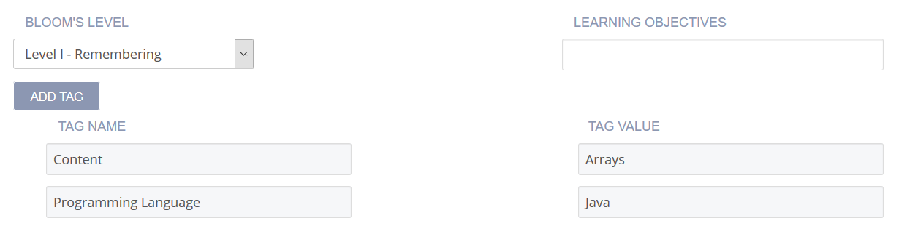
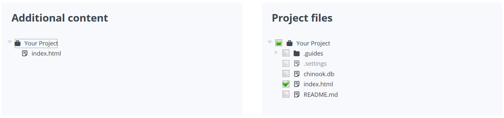
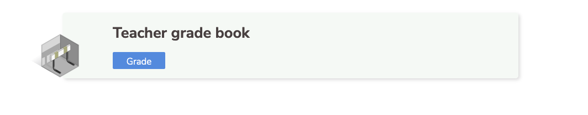
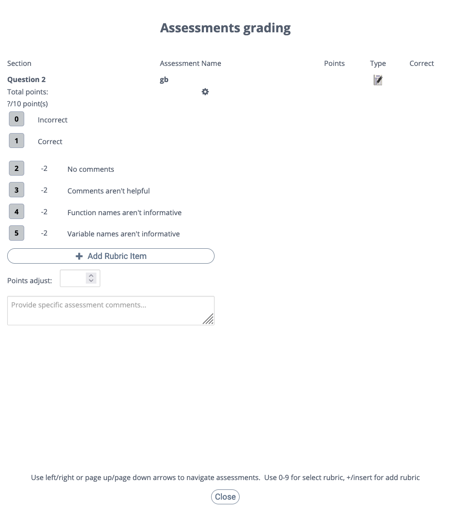

Grade Book¶
A Grade Book assessment may be used to manually grade assignments, it will not appear in the student guides. When the instructor opens a student assignment, the Grade Book is available for rubric based grading. Comments, points, and rubric items are visible to the student when the assessment is graded and the grades are released. Grade Book assessments do not show in the total assessment count on student/teacher dashboard.
On the General page, enter a short Name that describes the test. This name is displayed in the teacher dashboard and when the teacher is viewing the student work. The name should reflect the challenge and thereby be clear when reviewing.
Leaving the name visible will make it easier to locate when grading and we do not recommend toggling the Show Name setting to disable it.

Click Grading in the navigation pane and complete the following fields:

Points - Enter the score if the student selects the correct answer. You can choose any positive numeric value. If this is an ungraded assessment, enter zero (0).
Allow Partial Points - Partial points must be toggled on for this type of assessment. Once you toggle this on, you will be able to add rubric items. Rubric items are negative points, they will be subtracted from the total score of the assessment.

Click Metadata in the left navigation pane and complete the following fields:

Bloom’s Level - Click the drop-down and choose the level of Bloom’s Taxonomy: https://cft.vanderbilt.edu/guides-sub-pages/blooms-taxonomy/ for the current assessment.
Learning Objectives specific educational goal of the current assessment. Typically, objectives begin with Students Will Be Able To (SWBAT). For example, if an assessment asks the student to predict the output of a recursive code segment, then its Learning Objectives could be SWBAT follow the flow of recursive execution.
Tags - By default, Content and Programming Language tags are provided and required. To add another tag, click Add Tag and enter the name and values.
Click Files in the left navigation pane and check the check boxes for additional external files to be included with the assessment. The files are then included in the Additional content list.

Click Save to complete the process.
The instructor must opening a student assignment to complete the Grade Book grading. Locate the Grade Book assessment in the student file and click Grade.

Click on the 0 or 1 to allocate initial points for overall correctness and then use the other rubric items to subtract points for missing items. There is also a Points adjust field if you wish to adjust total points upwards.
